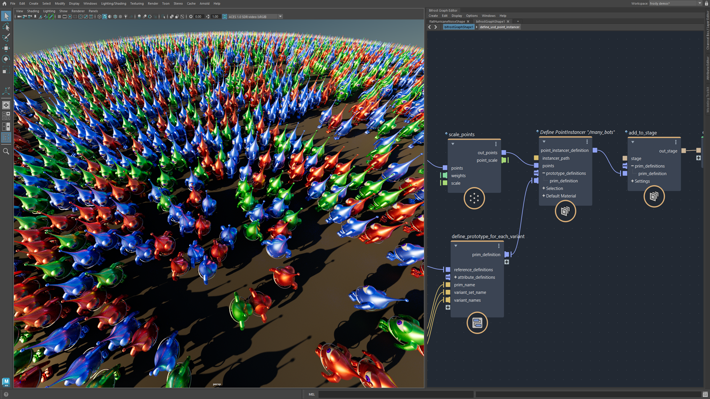
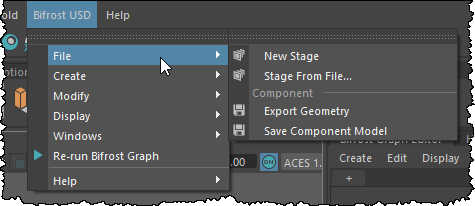

Bifrost-USD 结合 USD 的强大功能，以非破坏性的方式来集合、组织和编辑资产，同时还具备 Bifrost 图表的灵活性和程序性。例如，您可以使用 Bifrost 轻松创建 USD 点实例化器，对 USD 资产进行实例化。

Bifrost-USD 具有高级复合，可轻松快速地使用层和基本体来填充 USD 后台文件，同时还具有可与 USD API 功能匹配的低级节点。它与适用于 Maya 的 USD 集成，使您可以直接在视口中查看、选择和调整元素。
如果您使用的是 USD 的自定义扩展，则需要重建 Bifrost-USD 插件，以在 Bifrost 中使用 USD 资产。您可以从以下位置获取 Bifrost-USD 源文件：https://github.com/Autodesk/bifrost-usd。
此外，还提供了基于 Python 的插件 BifrostUSDExamples 的早期访问版本。这为通用和组件 USD 工作流提供了基于菜单的选项。该插件随 Bifrost 一起安装在以下文件夹中：
C:\Program Files\Autodesk\Bifrost\<MayaVersion>\<BifrostVersion>\bifrost\packs\usd_pack\<USDVersion>\examples\maya_plugin/Applications/Autodesk/bifrost/<MayaVersion>/<BifrostVersion>/bifrost/packs/usd_pack/<USDVersion>/examples/maya_plugin/usr/autodesk/bifrost/<MayaVersion>/<BifrostVersion>/bifrost/packs/usd_pack/<USDVersion>/examples/maya_plugin
若要启用该插件，请将包含 bifrostUSDExamples.mod 文件的文件夹的路径添加到 MAYA_MODULE_PATH 环境变量（例如，在 Maya.env 文件中）中，然后重新启动 Maya 并使用插件管理器加载 bifrostUSDExamples.py。Maya 主菜单栏上将显示新菜单“Bifrost USD”。